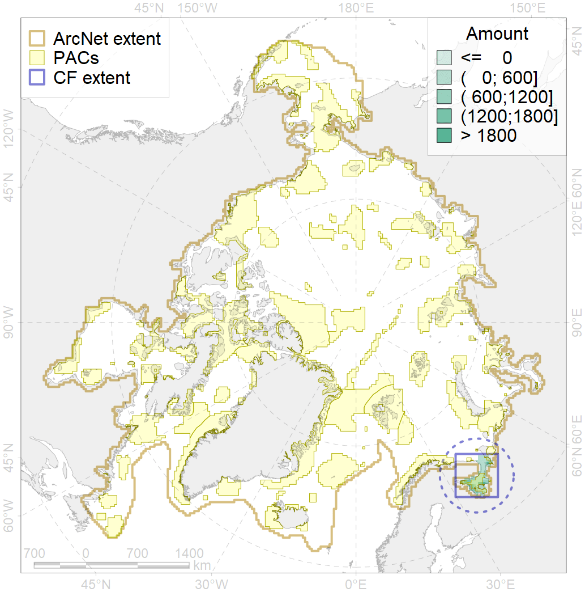
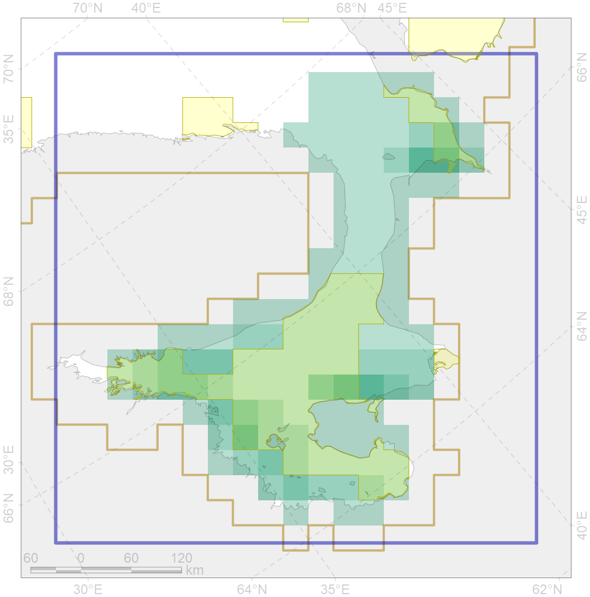

3125

| CF code | 3125 |
| CF name | Polynyas distribution in the White Sea region |
| Time Period | 1998 – 2018, adopted for recent changes |
| Source(s) | AARI ice charts, CIS ice charts |
| Seasonality | Spring |
| Depth Horizon | Sea level (0m) |
| Methodology | Timeseries analysis for spatial locals |
| Use Restrictions | Joined terms of data licenses, copyrights, restrictions, terms of use, disclaimers, etc. No additional terms from data contributor. |
| Author Name | Nikita Platonov |
| Notes | |
| Scenario’s Target | 0.12 |
| Target Achievement | 0.476 (Scenario: 396.5%) |
| PAC | Share of the Total Amount within the PAC | Share of the Target Achievement for the ArcNet | PAC’s Contribution to the Target Achievement |
|---|---|---|---|
| 24 | 5.2%8.2% | 40.5%63.8% | 10.2%16.1% |
| 26 | 37.8%42.8% | 249.4%278.0% | 62.9%70.1% |
| inner | 43.0%51.0% | 289.9%341.8% | 73.1%86.2% |
| outer | 57.0%87.2% | 106.6%315.6% | 26.9%79.6% |
| † supplement values are for area consistence whereas principal values are for Accenter compatible gridded stats |